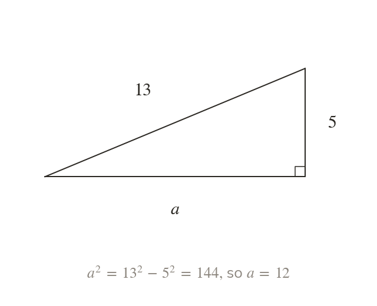

Rearranged for a shorter side
To find a shorter side, rearrange:
Finding a shorter side subtracts the squares.
The same theorem finds a shorter side when it is rearranged to
Finding a shorter side subtracts, while finding the hypotenuse adds.
Finding a shorter side subtracts, while finding the hypotenuse adds.